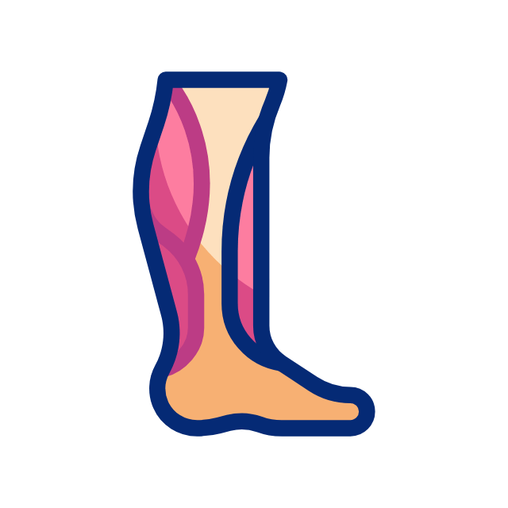
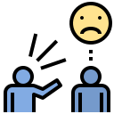

Perlaksanaan Karakuri Kaizen
Untuk melaksanakan Karakuri kaizen, terlebih dahulu adalah penting untuk fahami situasi sebenar. Dengan itu kita ketahui langkah-langkah untuk selesaikan permasalahan.
Karakuri Kaizen mengandungi 4 langkah
Langkah 1
Pemilihan Item
Kenalpasti apa yang hendak di kaizen samada proses atau mesin dari segi berat, sukar, rumit, jarak jauh, susah, MURI,MURA, MUDA.
Langkah 2
Memahami Situasi Sebenar
Subjek pada proses atau kerja yang dipilih untuk di kaizen perlu difahami masalah yang
wujud secara terperinci.
(ambil satu masalah untuk diselesaikan)
Langkah 3
Kaji Cadangan Kaizen
Fikirkan kaizen yang bagaimana hendak dilakukan, cadangkan sebanyak mungkin idea dan
kaji kaizen tersebut serta ramalkan kaizen yang paling efektif dan pilih kaizen yang
terbaik.
(berbincang dengan orang lain)
Langkah 4
Melaksanakan Kaizen
Laksanakan kaizen. Dapatkan kerjasama dari jabatan berkaitan untuk membuat, menguji, memasang dan menggunakan. Perbetulkan dan menilai keberkesanannya.
Point Penting Kaizen Pergerakan
Titik penglihatan untuk kaizen pergerakan
1.

Lihat barang
2.
Lihat pergerakan kaki
3.

Lihat pergerakan mata
4.
Lihat pergerakan tangan
Point Dalam Karakuri Kaizen
Tanpa prejudis, terima semua idea secara bebas. Seterusnya patuhi 4 peraturan dibawah
1.
Jangan kritik baik/ buruk idea yang diutarakan
(Jangan sesekali menilai idea yang diberikan)
2.
Galakkan kebebasan semasa memberi idea
(Idea adalah sesuatu yang tidak ternilai dan fantastik)
3.
Terima semua jenis idea
(Lagi banyak idea lebih banyak manfaatnya)
4.
Gabungkan idea
(Gabungan idea dari individu akan menghasilkan jaringan tindakan)
Karakuri Kaizen
MATLAMAT
Untuk menerapkan kebolehan dalam pembuatan kaizen secara berterusan dengan memikirkannya sendiri, membuatnya sendiri dan menggunakanya sendiri
SASARAN
Menyayangi kaizen yang dihasilkan sendiri dan berkebolehan untuk menangani perubahan (henkaten)
Kaizen yang dilakukan dengan tangan sendiri, kos yang murah yang dapat meningkatkan produktiviti melalui penjimatan kos, peningkatan tahap keselamatan dan memberi impak yang besar.
Definishi Karakuri Kaizen ada 3 iaitu
Mekanisme yang ringkas dan simple
Tidak guna wang yang banyak
Menghapuskan MURI,MURA, MUDA
Titik tolak Karakuri kaizen adalah, untuk melakukan kerja yang 「Mudah」 perlukan kaizen yang 「menyeronokkan」.
Semua permasalah di genba jika dilakukan 「Karakuri kaizen」 akan menghasilkan tempat kerja yang selamat dan mudah.